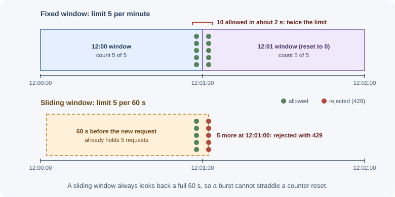
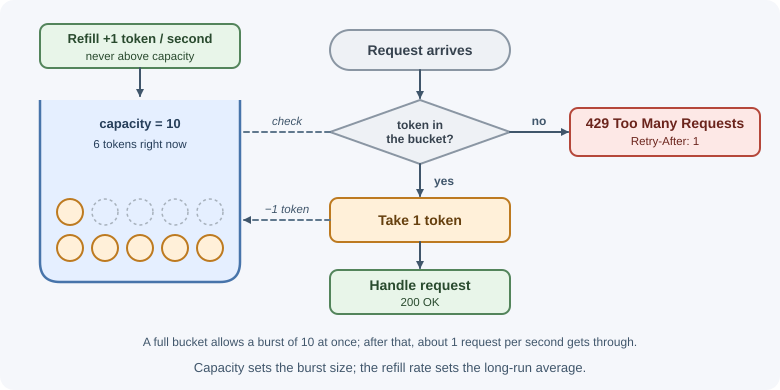
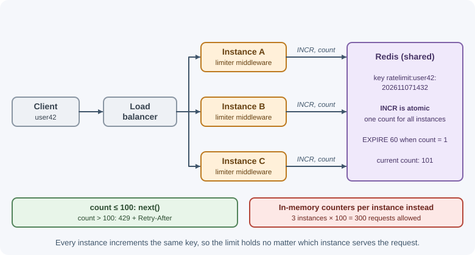

Rate Limiting and Throttling¶
Rate limiting caps how many requests a client may make in a period of time,
such as 100 requests per minute per API key. Requests over the limit are
rejected, usually with 429 Too Many Requests, until the client's allowance
recovers. Throttling is a close relative that slows or queues excess
requests instead of rejecting them outright.
Why it matters¶
Without limits, a single client can consume all of your capacity:
- Abuse and brute force: attackers try thousands of passwords, coupon codes, or OTPs per minute; scrapers download your whole catalog.
- Overload protection: a buggy client stuck in a retry loop, or a traffic spike, can take the service down for everyone.
- Fairness: one heavy tenant should not degrade service for others.
- Cost control: each request may call paid APIs (SMS, AI models, maps).
- Commercial plans: free tiers get lower limits than paid tiers.
Rate limiting is a standard part of API security (see API security) and of resilience in general.
Real-world usage¶
- GitHub's REST API allows 5,000 requests per hour for authenticated
users and 60 per hour for unauthenticated requests. Responses carry
x-ratelimit-remainingandx-ratelimit-reset; over the limit, GitHub answers 403 or 429 and asks clients not to retry before the reset time (GitHub Docs: REST API rate limits). - Stripe applies a global limit per account — 100 requests per second in
live mode — plus lower limits on some endpoints, and returns
429 Too Many Requestswhen they are exceeded (Stripe: rate limits). - Amazon API Gateway throttles requests with the token bucket algorithm, where a burst setting allows a short overrun of the steady rate (AWS: API Gateway throttling).
- Nginx limits request rates with its
limit_reqmodule using the "leaky bucket" method (nginx: ngx_http_limit_req_module).
Popular tools and providers: express-rate-limit with
rate-limit-redis, Nginx limit_req, API gateways such as Amazon API
Gateway, Kong, and Envoy, and edge services such as Cloudflare rate limiting
rules.
How it works¶
Identifying the client¶
A limit needs a key — who is being counted:
| Key | Pros | Pitfalls |
|---|---|---|
| IP address | Works for anonymous traffic | Many users behind one NAT or corporate proxy share an IP; attackers rotate IPs; IPv6 gives each user huge ranges |
| User ID | Accurate per person | Only after authentication |
| API key / client ID | Natural for public APIs and plans | Keys can be shared or leaked |
| Combination | e.g. per account and per IP for sign-in | More state to track |
Behind a proxy or load balancer, the TCP connection comes from the proxy,
so every request appears to have the proxy's IP. The real client IP is in a
header such as X-Forwarded-For, but clients can forge that header. Only
trust it from proxies you control: in Express, configure trust proxy to the
exact number of proxy hops (or their addresses) rather than true. A wrong
setting either rate-limits everyone as one client or lets attackers spoof any
IP.
For IPv6, limit by a prefix (such as /64) rather than a single address,
since one user can easily control many addresses in their prefix.
Algorithms¶
Fixed window¶
Count requests in fixed time buckets (for example, each calendar minute). Reset the counter at the start of each window.
limit = 5 per minute
12:00:00 ─────────────── 12:01:00 ─────────────── 12:02:00
✔ ✔ ✔ ✔ ✔ ✘ ✘ ✔ ✔ ...
count resets ──┘
- Simple: one counter per key per window (Redis
INCR+EXPIRE). - Boundary burst problem: a client can send 5 requests at 12:00:59 and 5 more at 12:01:00 — 10 requests in two seconds, double the intended rate.

Sliding window log¶
Store the timestamp of every request. On each request, discard timestamps older than the window and count what remains.
window = 60 s, limit = 5
now = 12:01:30 → keep timestamps after 12:00:30 → count them → allow if < 5
- Exact; no boundary burst.
- Memory grows with the limit (one entry per request per key); more expensive at high limits.
Sliding window counter¶
Approximate a sliding window using the current and previous fixed-window counts, weighted by how far into the current window you are:
estimate = current_count + previous_count × (1 − elapsed_fraction_of_current_window)
previous minute: 8 requests, current minute: 3 requests, 25% into the minute
estimate = 3 + 8 × 0.75 = 9
- Cheap (two counters) and smooths out boundary bursts.
- Slightly approximate; good enough for most APIs.
Token bucket¶
A bucket holds up to capacity tokens and refills at a steady rate. Each
request takes one token; if the bucket is empty, the request is rejected.

- Allows bursts up to the capacity, while enforcing an average rate.
- Very common in API gateways and cloud services.
- State per key: token count and last refill time.
Leaky bucket¶
Requests enter a queue (the bucket) and are processed ("leak out") at a constant rate. If the queue is full, new requests are dropped.
incoming (bursty) ──► [ queue, size N ] ──► processed at fixed rate ──►
full → reject
- Produces a smooth, constant output rate — useful when protecting a downstream system that cannot handle bursts.
- Adds latency (requests wait in the queue); this is throttling behavior.
Comparison¶
| Algorithm | Bursts | Accuracy | Memory | Typical use |
|---|---|---|---|---|
| Fixed window | Up to 2× at boundaries | Low at edges | Very low | Simple limits, low stakes |
| Sliding window log | No | Exact | High | Strict limits, low volume (e.g. sign-in) |
| Sliding window counter | Smoothed | Approximate | Low | General API limits |
| Token bucket | Yes, up to capacity | Good | Low | API gateways, public APIs |
| Leaky bucket | No (smoothed output) | Good | Queue size | Protecting fragile downstreams |
Distributed rate limiting with Redis¶
With several app instances, an in-memory counter per instance is wrong: three instances each allowing 100 requests per minute allow 300 in total, and the count depends on which instance the load balancer picks. Keep the counters in a shared store, usually Redis.

The operations must be atomic, or two instances can read the same count
and both allow a request. A fixed window needs INCR (atomic) followed by
setting an expiry when the key is new:
INCR ratelimit:user42:202611071432 → returns the new count
EXPIRE ratelimit:user42:202611071432 60 → only when the count is 1
For token buckets and sliding windows, run the read-compute-write logic in a Lua script, which Redis executes atomically.
Decide what happens if Redis is unavailable: fail open (allow requests, risking overload) or fail closed (reject, risking an outage). Sign-in limits often fail closed; general API limits often fail open with an alert.
Responding to limited requests¶
- Status
429 Too Many Requests. Retry-Afterheader: seconds to wait (or an HTTP date) before retrying.- Rate limit headers so clients can pace themselves. The IETF
RateLimitheader fields specification (a draft in progress) usesRateLimit-PolicyandRateLimitfields describing the quota and what remains. Many APIs still use the older non-standardX-RateLimit-Limit,X-RateLimit-Remaining, andX-RateLimit-Reset. - A clear error body: which limit was hit and when to retry.
HTTP/1.1 429 Too Many Requests
Retry-After: 30
Content-Type: application/problem+json
{"type":"https://api.example.com/problems/rate-limited",
"title":"Too many requests","status":429,
"detail":"Limit of 100 requests per minute exceeded. Retry in 30 seconds."}
503 Service Unavailable with Retry-After is used when the server as a
whole is overloaded, not a specific client over its quota.
Rate limiting, throttling, and quotas¶
| Term | Meaning | Example |
|---|---|---|
| Rate limiting | Reject requests above a rate | 100 requests/min, extra get 429 |
| Throttling | Slow down or queue excess requests | Add delay after 5 failed sign-ins; process jobs at 10/s |
| Quota | A total allowance over a long period, often tied to billing | 10,000 API calls per month on the free plan |
| Concurrency limit | Maximum simultaneous in-flight requests | At most 5 parallel exports per account |
The terms are often used loosely; be precise in API documentation.
Where to enforce¶
Client ─► CDN / WAF ─► API gateway / load balancer ─► reverse proxy ─► app
(DDoS, (per-key quotas, (per-IP (per-user,
bot rules) plan limits) limits) per-action,
business rules)
- Edge (CDN, WAF): absorbs volumetric attacks before they reach you.
- API gateway: per-API-key and per-plan limits; central configuration.
- Reverse proxy (for example, Nginx
limit_req): cheap per-IP limits — see Nginx. - Application: limits that need business context — per user, per account, per action (password attempts, SMS sends, exports).
Defense in depth: coarse limits at the edge, precise limits in the app.
Client-side handling¶
Clients should treat 429 as a signal to slow down:
- Honor
Retry-Afterwhen present. - Otherwise retry with exponential backoff and jitter, with a maximum number of attempts (see timeouts, retries, and idempotency).
- Pace requests proactively using the remaining-quota headers.
- Never retry instantly in a tight loop — that makes overload worse.
When to use and when not to use¶
Use rate limiting when:
- An endpoint is open to the internet, especially sign-in, sign-up, password reset, OTP, and search.
- Requests cost money (SMS, email, AI calls) or are expensive (exports, reports).
- Tenants or API keys must get a fair share, or plans have different limits.
Use something else when:
- The problem is a sudden flood of traffic from many sources — that is a DDoS, absorbed at the network edge (CDN or WAF), not in the app.
- The service is slow for everyone because it is under-provisioned — limiting hides the problem; scale or cache instead.
- A downstream system needs a steady flow — queue the work and process it at a fixed rate (throttling) instead of rejecting requests.
| Problem | Tool | Response to the client |
|---|---|---|
| Brute force on sign-in | Per-account and per-IP limit | 429 with Retry-After |
| One API key overusing a shared API | Token bucket per key | 429 with quota headers |
| Free versus paid plan allowance | Monthly quota | 429 or 402, with plan details |
| Too many parallel exports per account | Concurrency limit | 429 or 409 until one finishes |
| Fragile downstream system | Queue with a fixed processing rate (throttle) | 202 Accepted, processed later |
| Whole service overloaded | Load shedding at the gateway | 503 with Retry-After |
Practical examples¶
express-rate-limit with a shared Redis store¶
import express from "express";
import { rateLimit, ipKeyGenerator } from "express-rate-limit"; // v8
import { RedisStore } from "rate-limit-redis";
import { createClient } from "redis";
const redisClient = createClient({ url: process.env.REDIS_URL });
await redisClient.connect();
const app = express();
// Exactly one proxy (the load balancer) sits in front of the app
app.set("trust proxy", 1);
// General API limit: 100 requests per minute per client
const apiLimiter = rateLimit({
windowMs: 60 * 1000,
limit: 100,
standardHeaders: "draft-8", // RateLimit-Policy and RateLimit headers
legacyHeaders: false, // no X-RateLimit-* headers
store: new RedisStore({
sendCommand: (...args) => redisClient.sendCommand(args),
}),
});
// Strict limit for sign-in, keyed by email + IP
const signInLimiter = rateLimit({
windowMs: 15 * 60 * 1000,
limit: 5,
standardHeaders: "draft-8",
legacyHeaders: false,
// ipKeyGenerator groups IPv6 addresses by subnet so one user cannot
// rotate through addresses in their own range
keyGenerator: (request) =>
`${String(request.body?.email ?? "").toLowerCase()}|${ipKeyGenerator(request.ip)}`,
store: new RedisStore({
prefix: "signin:",
sendCommand: (...args) => redisClient.sendCommand(args),
}),
});
app.use("/api", apiLimiter);
app.post("/api/sign-in", express.json(), signInLimiter, signInHandler);
The default key is the client IP (with IPv6 grouped by subnet). Option names
and header formats have changed across major versions of
express-rate-limit, so check the documentation for the version you
install.
A token bucket in plain JavaScript (single process)¶
// Illustrates the algorithm; use a shared store for multiple instances
const buckets = new Map();
function allowRequest(key, capacity = 10, refillPerSecond = 1) {
const now = Date.now();
const bucket = buckets.get(key) ?? { tokens: capacity, updatedAt: now };
// Add tokens for the time elapsed since the last request
const elapsedSeconds = (now - bucket.updatedAt) / 1000;
bucket.tokens = Math.min(capacity, bucket.tokens + elapsedSeconds * refillPerSecond);
bucket.updatedAt = now;
const allowed = bucket.tokens >= 1;
if (allowed) bucket.tokens -= 1;
buckets.set(key, bucket);
return allowed;
}
Best practices¶
- Choose keys deliberately: per user or API key when authenticated, per IP (or IPv6 prefix) otherwise, and combinations for sign-in.
- Configure
trust proxyprecisely so the client IP is correct and cannot be spoofed. - Use a shared store for limits when running more than one instance, with atomic operations.
- Apply stricter limits to expensive or sensitive actions (sign-in, OTP, SMS, password reset, exports, AI calls).
- Return
429withRetry-Afterand quota headers; document your limits. - Layer limits: edge, gateway or proxy, and application.
- Monitor how often limits trigger; tune them from real traffic.
- Decide fail-open versus fail-closed behavior when the limiter's store is down.
In production¶
- Every user is throttled at once. Symptom: 429s for everyone right
after an infrastructure change, such as adding a load balancer. Detect:
the limiter keys in logs all show the same IP — the proxy's;
express-rate-limitalso logs a validation error (ERR_ERL_UNEXPECTED_X_FORWARDED_FOR) whenX-Forwarded-Forarrives buttrust proxyis off. Cause:trust proxyis unset or counts the wrong number of hops. Fix: set it to the exact number of proxies and checkrequest.ipin a test request. - Clients exceed the documented limit several times over. Symptom: a client with a limit of 100 per minute makes about 300. Detect: request counts per key summed across instances. Cause: each instance keeps its own in-memory counter. Fix: use a shared store such as Redis.
- A Redis outage takes the API down. Symptom: every request fails while
Redis is unreachable. Detect: store connection errors from the limiter.
Cause: the limiter blocks traffic when its store fails (the default in
express-rate-limit). Fix: choose deliberately — setpassOnStoreError: trueto fail open for general limits, and keep failing closed for sign-in. - 429s keep climbing after the spike ends. Symptom: the rejected rate
stays high even though real users have gone. Detect: the same clients
retry within milliseconds of each 429. Cause: clients ignore
Retry-Afterand retry without backoff. Fix: always sendRetry-After, document it, and use backoff with jitter in your SDKs. - A whole office is locked out of sign-in. Symptom: support tickets from many users at one company. Detect: many accounts share one IP that hits the per-IP limit. Cause: sign-in limited by IP only. Fix: key by account and IP together, and give per-IP limits more headroom.
Important terminology¶
- Rate limit: the maximum number of requests allowed per time window.
- Throttling: slowing or queuing excess requests instead of rejecting.
- Quota: a total allowance over a longer billing period.
- Window: the time period over which requests are counted.
- Token bucket: a bucket of tokens refilled at a fixed rate; requests spend tokens.
- Leaky bucket: a queue drained at a constant rate.
- Burst: a short spike of requests above the average rate.
- Fail open / fail closed: allow or deny traffic when the limiter cannot decide.
Retry-After: a response header telling the client when to retry.X-Forwarded-For: a header carrying the original client IP through proxies.
Common mistakes and misconceptions¶
- Per-instance in-memory limits in a multi-instance deployment.
- Trusting
X-Forwarded-Forfrom anyone, letting attackers pick their IP. - Not configuring
trust proxy, so every client shares the proxy's IP and the whole site gets limited together. - Only limiting by IP for sign-in, which lets distributed attacks through and blocks offices behind one NAT.
- Returning
500or403instead of429for limited requests. - No
Retry-After, leaving clients to guess and retry aggressively. - Non-atomic read-then-write counters in Redis, which miscount under concurrency.
- "Rate limiting stops DDoS." It helps, but volumetric attacks must be absorbed at the network edge.
Revision questions¶
- Why is the fixed window algorithm vulnerable to bursts at window boundaries?
- How does a token bucket allow bursts while enforcing an average rate?
- Why must distributed rate limiting use atomic operations in a shared store?
- What can go wrong when an app behind a load balancer reads the client IP incorrectly?
- Which headers should accompany a
429response, and how should clients react? - Where in the request path would you enforce per-IP, per-API-key, and per-action limits?